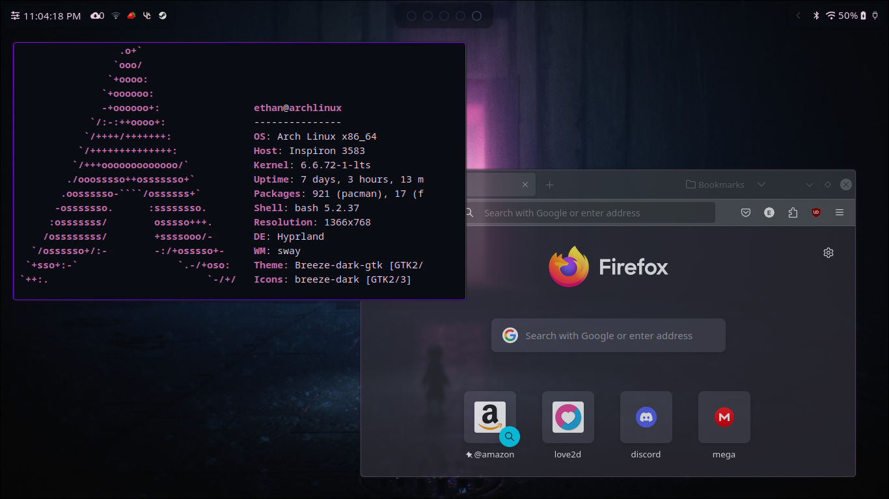
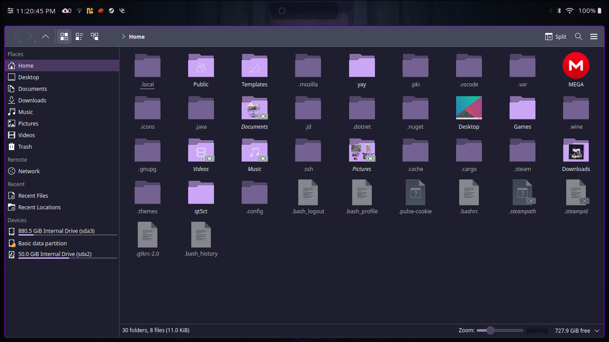
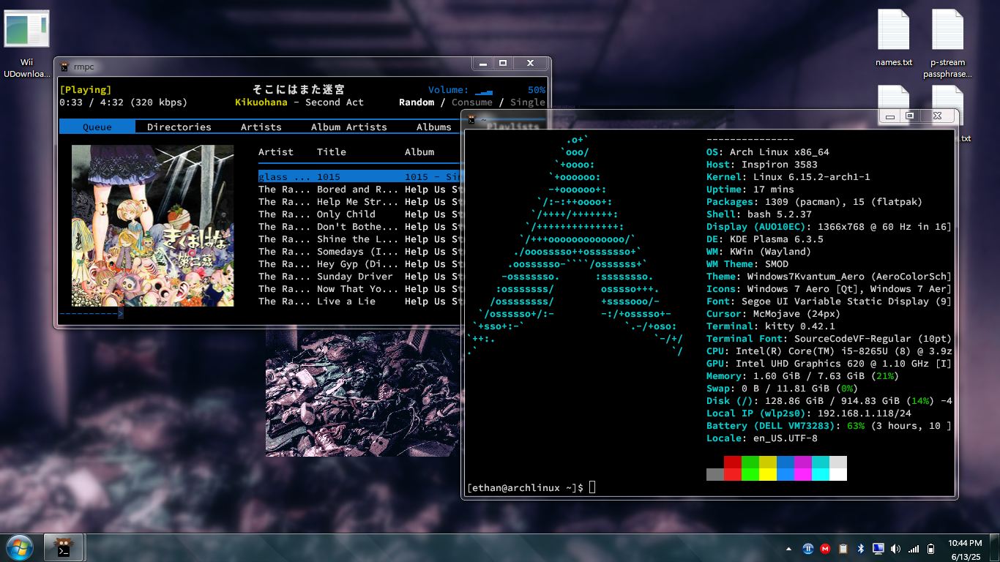
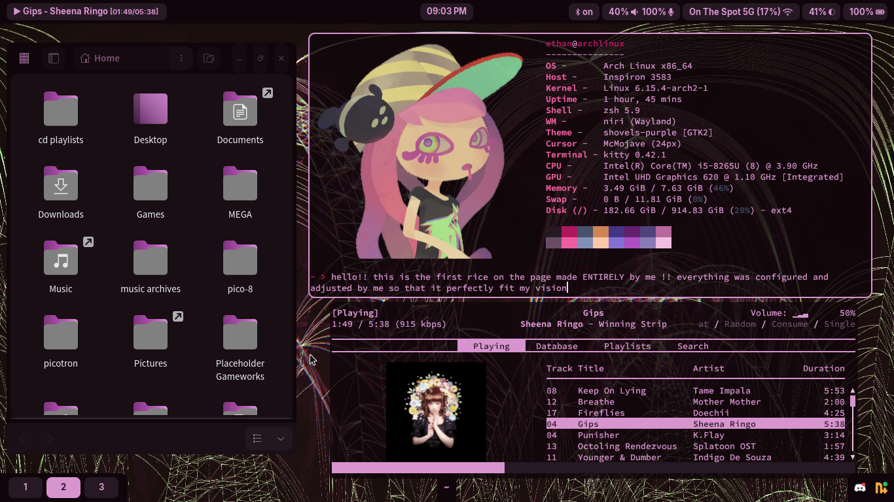
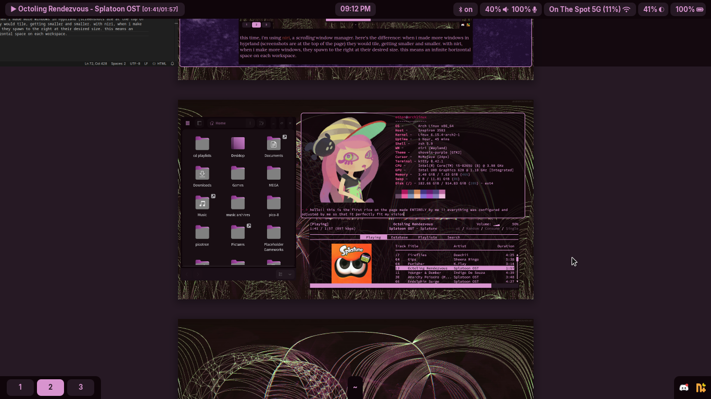

...linux?
~~outdated, check below for more updates~~
yes! exactly! i use linux everyday for school and for fun. currently, i am running arch linux (i use archinstall, i'm not thatweird) and hyprland to make this super cool setup that essentially allows me to change anything i want about the system. or at least that's the idea. right now i'm still in the learning stage because i still can't figure out file app associations, volume and brightness change notifications, or how to write little scripts to do things for me / give extra functionality to buttons.
i may update this page on some later day if i update my linux rice and want to show off but that day is not today!
theming in linux is definitely a big ask for me, or i should rephrase. qt5/qt6 and custom themes are a big ask for me, mostly because kde apps use some special color format that i don't understand. i don't remember what witchcraft i used to get color schemes on my terminal, but i think i used pywal and maybe some other program.
my workflow in linux is much faster than on my windows partition. it could just be me, but there is the reasoning that windows 11 just... doesn't run that well on my laptop. i'd take linux over windows pretty much any day just because of the lighter footprint and increased customizability it gives me. oh and also it lets me flex on my friends who could not care less.
i have a confession though. i only use my windows partition for roblox... yerp.
June 14th, 2025
things have changed in my setup, quite drastically. first of all, i figured out how to play roblox on linux using this program called sober ! second of all, here's a screenshot of my desktop.
one hundo percent different, huh? it'll probably be wayy out of date in a week since i can never quite make my mind up with these things, but nonetheless it's still fun to showcase. this is a kde "rice" and the screenshot was shortly after i figured out how to use mpd (music player daemon). it's obviously inspired by windows seven, and frutiger aero, but the theme wasn't made by me. here's the link. i'll come back in another 6 months to show off some other setup i bet.
July 5th, 2025
what did i tell ya... completely new and my so-far favorite setup ever!
this time, i'm using niri, a scrolling window manager. here's the difference: when i made more windows in hyprland (screenshots are at the top of the page) they would tile, getting smaller and smaller. with niri, when i make more windows, they spawn to the right at their desired size. this means an infinite horizontal space on each workspace.
as you can see, niri also has an overview, letting me see all of my windows from a zoomed out view. idk about you, but this is really cool. i learned how to do all of this mostly through trial-and-error, but if you wanted to learn there's plenty of video guides and wikis out there for you to discover. here is a video guide that helped me get started on configuring waybar and wofi and several other tools, if you want something structured.
overall changes
- switched to niri / a wm
- moved away from qt apps
- embraced my terminal (themed it and now use it for music)
- made a custom waybar theme (2 bars this time!)
- created a color scheme and stuck to it
- ...not ugly (my kde rice wasn't ugly btw) (only the first one)